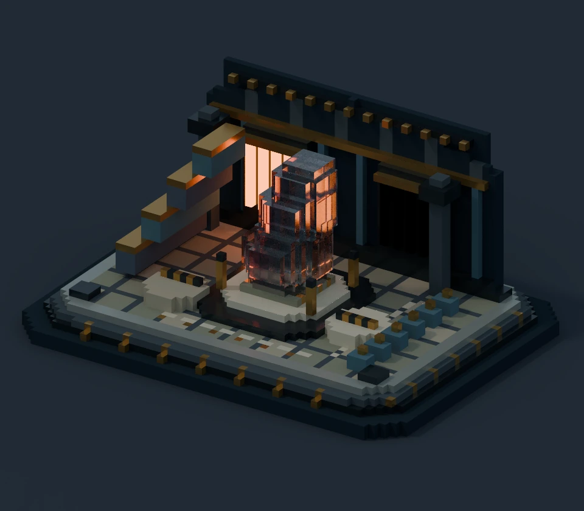

Path-Traced Voxels
Switch lamps and watch the light reflect off stone and pass through glass.
Amber lamp

Loading Afterglass…
AfterglassPath-traced reference
- Surface
- Glass
- Samples / pixel
- —
What changes in the trace
Switching lamps changes the colored light emitted by the slotted fixtures. Making the column opaque keeps its shape and removes transmission so you can compare how the light reaches the stone around it. The reference views are full Margo path-traced renders. Start live trace to run the same scene in this browser.